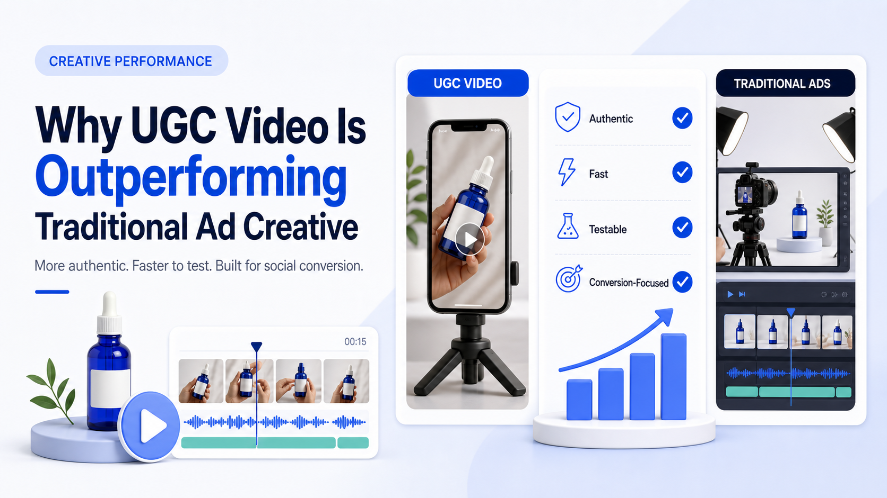

WE Marketing · WEM Blog
Why UGC Video Is Outperforming Traditional Ad Creative

UGC video ads convert better and cost less than studio-produced creative. Here's why brands are shifting budget from traditional ads to creator-made content.
- TikTok Shop agency strategy
- Creator affiliate and UGC operations
- Product page, content, and conversion guidance
WE Marketing / WEM 发布 TikTok Shop 代运营、达人联盟、UGC、直播和商品页转化相关实战内容。
Back to WE Marketing blog